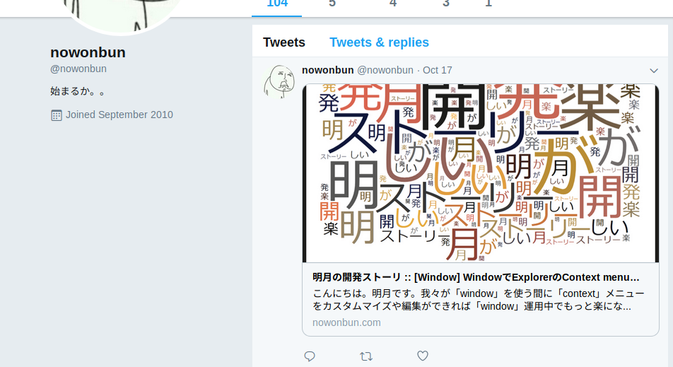

[HTML] Open graph(ogタグ)
こんにちは。明月です。
前述でタグに関して調べて見ました。
link - [HTML] Metaタグに関して(SEO最適化)
今日、説明しようという「opengraph」も実はhtmlのメタタグの中ですが、その特性が一般メタタグと違うので別の投稿で掲示しました。
「opengraph」はSNS(ソーシャルネットワーク)でよく使うタグです。我々がSNSでウェブページのリックを##00コピペーする時に、ただURLアドレスだけあればそのリンクだけではウェブページの情報が何があるかを知らないですね。
例えば、私がツイッターにブログのリンクを掲示した場合、他人がそのリンクが開発サイトかアダルトサイトかは知らないです。また、最近ウェブページでスパムや悪性コードがあるサイトが多い時代にはただリンクだけでは接続が大変ですね。
その時に使うプリビュータグでイメージやリンクの説明、タイトルを表示するようなタグです。

上のイメージは私がツイッターに掲示したブログのリンクです。イメージやタイトル、説明が表示されますね。
「opengraph」に関して調べましょう。
link - http://ogp.me
opengraphの基本タグ
1. og:title - サイトのタイトルタグ
2. og:type - サイトの種類スタイル (例)video.movie
3. og:image - サイトの代表イメージ
4. og:url - サイトの代表URL
<meta property="og:title" content="明月の開発ストーリ" /> <meta property="og:type" content="website" /> <meta property="og:url" content="https://www.nowonbun.com" /> <meta property="og:image" content="https://www.nowonbun.com/img/nowonbuntistory1.png" />
opengraphのオプションタグ
1. og:audio - サイトで含めるオーディオファイルURL
2. og:description - サイトの説明
3. og:determiner - 文言の始まる単語の選択ですが、日本語とは関係ないと思います。
4. og:locale - サイトの言語です。基本値は「en_US」ですが、日本語は「ja_JP」です。
5. og:locale:alternate - サイトの多国語設定タグです。
6. og:site_name - サイトタイトルはtitleタグで設定しますが、site_nameは細かいカテゴリタイトルです。
7. og:video - サイトで含めている動画ファイルURL
<meta property="og:audio" content="http://example.com/bond/theme.mp3" /> <meta property="og:description" content="<![CDATA[説明]]>"" /> <meta property="og:determiner" content="the" /> <meta property="og:locale" content="en_GB" /> <meta property="og:locale:alternate" content="fr_FR" /> <meta property="og:locale:alternate" content="es_ES" /> <meta property="og:site_name" content="Open graph タグ" /> <meta property="og:video" content="http://example.com/bond/trailer.swf" />
opengraphの構造プロパティ
og:オブジェクト:url - イメージあるいはビデオ、オーディオオブジェクトアドレス
og:オブジェクト:secure_url - SSL(HTTPS)のアドレス
og:オブジェクト:type - オブジェクトタイプの種類
og:オブジェクト:width - オブジェクト幅
og:オブジェクト:height - オブジェクト高さ
og:オブジェクト:alt - オブジェクト説明
<meta property="og:image" content="http://example.com/ogp.jpg" /> <meta property="og:image:secure_url" content="https://secure.example.com/ogp.jpg" /> <meta property="og:image:type" content="image/jpeg" /> <meta property="og:image:width" content="400" /> <meta property="og:image:height" content="300" /> <meta property="og:image:alt" content="A shiny red apple with a bite taken out" /> <meta property="og:video" content="http://example.com/movie.swf" /> <meta property="og:video:secure_url" content="https://secure.example.com/movie.swf" /> <meta property="og:video:type" content="application/x-shockwave-flash" /> <meta property="og:video:width" content="400" /> <meta property="og:video:height" content="300" /> <meta property="og:audio" content="http://example.com/sound.mp3" /> <meta property="og:audio:secure_url" content="https://secure.example.com/sound.mp3" /> <meta property="og:audio:type" content="audio/mpeg" />
Arrays(配列)とObject Typesのこともありますが、必要がないと思います。
ここまで、opengraphに関して調査しましたが、opengraphは検索最適化とは関係ないです。
googleマニュアルでもopengraphは検索順位で影響があるということはありません。
link - https://support.google.com/webmasters/answer/7451184?hl=ko
でも、Googleでは他のサイトでどのぐらいリンクされていることは検索順位では影響があります。
つまり、opengraphだけでは検索順位では影響がないですが、opengraphが設定されているサイトはSNSでリンク共有がしやすいので、2次的にグーグルの検索順位で影響があります。
- [CSS] ブラウザから開発する方法 (developer mode)2019/12/25 07:54:31
- [CSS] 色スタイル、グラデーション2019/12/24 07:37:22
- [CSS] アニメーション (animation)2019/12/20 20:51:38
- [CSS] トランスフォーム (transform)2019/12/19 13:00:26
- [CSS] トランジション(transition)2019/12/18 20:33:57
- [CSS] Columnスタイル2019/12/17 19:52:56
- [CSS] 整列スタイル (float)2019/12/17 00:08:54
- [CSS] 位置(position),表示(display)スタイル2019/12/13 20:08:50
- [CSS] border(枠)、余白スタイル - border, margin, padding2019/12/12 20:16:43
- [CSS] 文字スタイル2019/12/11 21:13:22
- [CSS] その他の疑似選択子 - link, visited, target, enabled, disabled, not, active, hover, focus2019/12/10 07:31:28
- [CSS] 疑似要素選択子 - fist-line, first-letter, before, after2019/12/09 07:28:27
- [CSS] 範囲と指定に関する選択子(全体選択子、要素選択子、孫選択子、子選択子、隣接選択子)2019/12/06 07:27:36
- [CSS] 疑似クラス - only-child, only-of-type, empty, empty, root2019/12/05 07:29:15
- [CSS] 疑似クラス - first-child, last-child, first-of-type, last-of-type2019/12/04 07:28:37
- [Python] 12. クラス(Class)を使う方法2020/06/10 19:33:33
- [Python] 11. デコレーター（Decorator）を使う方法2020/06/09 17:27:18
- [Python] 10. モジュールとパッケージ(import)2020/06/08 19:07:50
- [Python] 09. 例外処理する方法2020/06/05 17:11:47
- [Python] 08. ジェネレータ(Generator)2020/06/04 18:46:08
- [Python] 07. globalとnonlocal2020/06/03 20:34:49
- [Python] 06. 関数(function) - インライン関数、callbak、ラムダ(lambda)そしてクロージャ2020/06/02 20:51:22
- [Python] 05. コンプリヘンション(Comprehension)を使用する方法2020/06/01 19:38:58
- [Python] 04. 制御文(if, while, for, break, continue)とインデント2020/05/29 21:09:08
- [Python] 03. Pythonでリスト(list)とタプル(tuple)、そしてディクショナリ(dictionary)、セット(set)2020/05/27 18:49:08
- [Python] 02. データタイプ、変数宣言そしてコメントする方法2020/05/26 18:16:52
- [Python] 01. Python3をインストールする方法(Anacondaインストール)2020/05/25 19:02:44
- [Java] HttpConnectionを利用してウェブページを取得する方法2020/05/20 23:53:24
- [Java] Jsoupを利用してXMLファイル(HTML)を扱う方法2020/05/19 19:32:21
- [C#] 非同期ソケット通信(IOCP)-APMパターン2020/05/18 18:45:37